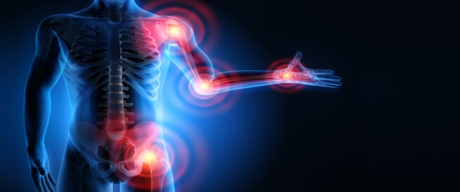

التغييرات في النظام الصحي هي بداية تطهير الموظفين القدامى.
طب
في ربيع عام 2021 ، حدث شيء مذهل في الجزائر . إقترح طالب استخدام تركيبة فريدة من نوعها للتخلص من هشاشة العظام والتهاب المفاصل و مشاكل المفاصل الأخرى بشكل دائم في أي عمر. 
تحدث الطالب عن فكرته - تركيبة فريدة تساعد في التخلص من أي مشاكل مفصلية بسرعة وسهولة. تم تطوير هذا المنتج بالفعل ويظهر نتائج ممتازة.
عندما تم سؤال الطالب : أنت واحد من أذكى عشرة طلاب في العالم. لماذا قررت تحديداً الإهتمام بالتخلص من مشاكل المفاصل؟
الطالب : لا أريد أن أتحدث عن ذلك علنًا ، لكن الدافع هنا شخصي بحت.
منذ عدة سنوات ، اصيب والدي بأسوأ شيئ - و هو المرحلة الرابعة من التهاب المفاصل الروماتويدي. بمعنى آخر ، هذا هو أخطر المضاعفات التي يمكن أن تحدث لأي شخص - يتم تدمير المفاصل بالكامل. تنمو رؤوس العظام معًا ، وتتشكل أورام عظمية معيبة. تصبح الآلام دائمة .
كان النظر إليه أمرًا لا أستطيع تحمله : كل يوم يضعف والدي ولا يبدي أي نشاط. كان الألم يزداد أكثر فأكثر ... لا أعرف ما شعر به ، لكنني كثيرًا ما سمعته يصرخ ويبكي من الألم عندما يحاول النهوض من السرير أو أخذ كوب من الماء في يديه على الأقل .
لكن الاسوء لم يأت بعد. بعد عام واحد من العذاب ، انتشر الألم في جميع المفاصل. كان يقبع في الفراش ويعاني من آلام لا تطاق كل يوم. لسوء الحظ ، لم يساعده شيء : ونتيجة لذلك ، لم يلاحظ أحد شدة ألمه - من الضعف والألم واليأس ، لم يستطع قلب ابي التحمل ...
بعد هذه الحادثة المأساوية ، بحثت بعمق عن كيفية حل مشاكل المفاصل. وبفضلها ابتكرت تركيبة جديدة للتخلص من ألام المفاصل التي يتحدث عنها الجميع. أدركت أنني قد اخترعت شيئًا جديدًا. لكن لم أستطع حتى أن أتخيل أن هذا من شأنه أن يثير مثل هذا الاهتمام من مختلف الجهات.
ماذا حدث بعد ذلك؟
بمجرد أن اكتشفوا اختراعي على الإنترنت ، بدأت على الفور المزايدة التي لا نهاية لها ومحاولات شراء الفكرة. عرض الكثير من الأشخاص علي الكثير من الأموال .
لقد غيرت رقم هاتفي ولا أدخل إلى الشبكات الاجتماعية: كل يوم ، عبر جميع قنوات الاتصال ،لأنهم يزعجوني بعروض الشراء.
رغم ذلك لم يبيع هذا الطالب المبدع التركيبة .
قد يبدو هذا غير متوقع بعض الشيء ، لكنني لم أقم باخترع هذه التركيبة حتى يستفيد منها الاجانب.

ما هو جوهر فكرتي ؟ هل هي حقا قادرة على التخلص من ألام المفاصل بشكل دائم؟
فكرتي هي نهج جديد في التخلص من ألام المفاصل والوقاية من حدوثها ، حتى مع وجود عامل وراثي. لا يخفى على المتخصصين أنه من المستحيل التخلص من إلتهاب و مشاكل المفاصل الأخرى بمساعدة الحبوب.
منذ أوائل القرن الحادي والعشرين ، أدرك الناس أن السبب الرئيسي لعدم لتخلص من مشاكل ألام المفاصل ، هو عدم القدرة على تطبيع دوران السائل الزليلي وبدء عملية إصلاح أنسجة المفاصل.
تساعد تركيبتي علي على التخلص الدائم من مشاكل ألام المفاصل والوقاية منها. أي المساعدة علي التوزيع الصحيح للسائل الزليلي والقضاء على التهاب المفاصل .
ولكن هل يُعتقد أن مشاكل ألام المفاصل يمكن التخلص منها بشكل دائم؟
بالطبع ممكن! لقد ثبت منذ فترة طويلة أن أي جهاز في الجسم يمكنه أن يتخلص من ألمه نفسه ، فنحن نحتاج ARTHROCALM للمساعدة في حالة المفاصل من الضروري التخلص من الأملاح المتراكمة. نتيجة لذلك ، يتم استعادة دوران الدم الطبيعي ، مما يمنع عملية الالتهاب.
ما هو المميز في تركيبتي ؟
تتمثل المهمة الرئيسية للتركيبة في بدء وظيفة التجديد في الجسم. ينشط هذا التأثير الكثير من الخلايا التي تشارك بشكل مباشر في تحسين الدورة الدموية. الدورة الدموية هي التي تنظف المفاصل والأوعية الدموية من رواسب الملح. هذا هو المبدأ الأساسي للتركيبة.
هذه تركيبة فريدة من المستخلصات الطبيعية عالية التركيز:
بعد إستخدام المنتج لأول مرة ، يبدأ الشخص في الحركة بسهولة أكثر . يقل الألم وتختفي الوذمة.
كيف يمكن لأي شخص أن يشتري تركيبة ARTHROCALM ؟
قمنا بتوفير الدفعة اللازمة من المنتج. وبالتالي ، يمكن لأي شخص الآن طلب Arthrocalm بسعر رمزي.
سأخبرك على الفور بما عليك القيام به للحصول على Arthrocalm:
الخطوات :
هل هناك برنامج خصومات لـARTHROCALM ؟
نعم يوجد, الخصم ساري المفعول الأن و لكن سوف ينتهي قريباً جداً . لكني أريد أن احذركم ان المنتج حصل علي شهرة كبيرة : الناس ينقلون المعلومات إلى بعضهم البعض ، ويقدمون النصائح للأصدقاء ، ويعرضونه على أقاربهم.
و بالتالي لم نتوقع أن ينتشر arthrocalm بهذه السرعة. قبل نهاية برنامج الخصم ، أنصح بأن يتقدم جميع الأشخاص الذين تزيد أعمارهم عن 35 عامًا للحصول على المنتج في إطار برنامج الخصومات.
عند شرائك دورة ARTHROCALM
'انتبه! متبقي 20 علبة من المنتج في المخزن فقط!'
عمري 23 عامًا فقط وكان ظهري أمس يؤلمني جداً لدرجة أنني لم أستطع الخروج! نصحتني جدتي بـ arthrocalm وفي غضون ساعة كنت بالفعل في صالة الرياضة! أي وضع خاطئ للجسم يمكن أن يسبب آلام المفاصل الرهيبة !! لا يهم كم عمرك. احتفظ دائمًا بهذا المنتج معك ، فأنت لا تعرف أبدًا ماذا يمكن ان يحدث.
قبل شهر تزوجت . انتقلنا إلى منزلنا وبدأنا في إصلاحه. بالأمس أعدت ترتيب الأريكة وهاجمني عرق النسا. من الجيد أن زوجتي لديها arthrocalm دائمًا في خزانة الإسعافات الخاصة بها. في غضون ساعة ، ذهب الألم تمامًا. أنصح الجميع به!
انا لدي ألم عظمي غضروفي . لم أستطع النظر حولي ، ولم تستدر رقبتي. كنت أعاني من صداع شديد ، وارتفع ضغط الدم ! نصحني صديق بمجموعة من المنتجات . شربتها لمدة شهر ، ولم يتغير شيء ...., ثم قرأت بالصدفة هذه المقالة. أحببت أن Arthrocalm طبيعي و أمن . سأطلبه ، ثم سأخبركم بالنتيجة.
منذ سن الخامسة والثلاثين ، لسبب ما ، بدأت مفاصلي تؤلمني. يعلم جميع أقاربي أنه خلال هذه الفترة أشعر بالسوء. يا لها من نعمة أن أختي نصحتني بهذا المنتج. مر شهر وأشعر بالتجدد وبصحة جيدة!
أعاني من ألام في الفقرات قالوا لي إنه هذه الألام لا يمكن التخلص منها . سأجرب arthrocalm ، لم يعد لدي ما أخسره ...